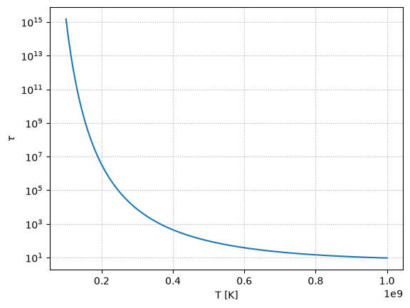
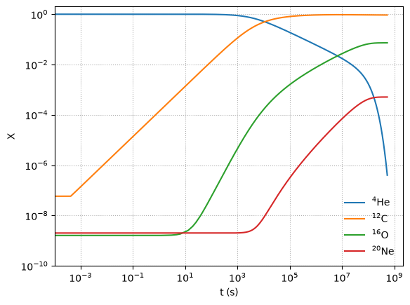
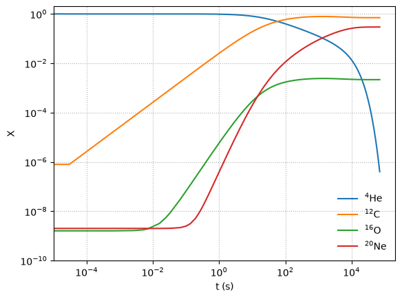
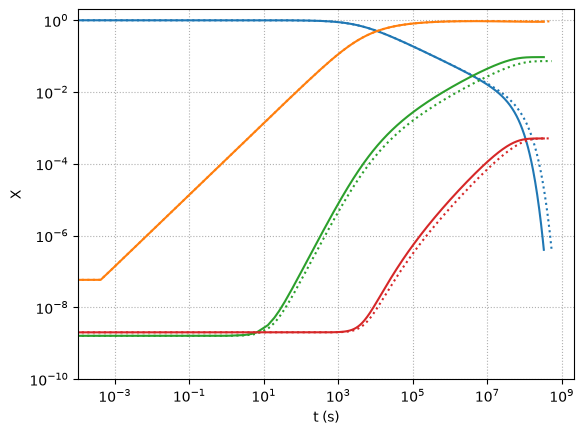

Homework 5 solutions#
1. nuclear reactions#
We want to understand how tunneling allows fusion to occur in stars.
import unyt
import math
e = unyt.qe.in_cgs()
k = unyt.kb_cgs
a.#
Let’s look at the classical method. We have:
where \(r_0\) is the turning radius. Solving for \(T\), we find:
We can evaluate this for \(r_0 = 1~\mathrm{fm}\)
r0 = 1.0 * unyt.fm
T = 2./3. * e**2 / (k * r0)
T.in_cgs()
unyt_quantity(1.11400646e+10, 'K')
We see we need a temperature of \(10^{10}~\mathrm{K}\) to fuse protons classically.
b.#
Now let’s assume that fusion occurs when the protons are within a de Broglie wavelength of one-another.
We can write the kinetic energy in terms of de Broglie wavelength, \(\lambda = h/p\):
where now we have evaluated the Coulomb potential at the de Broglie wavelength. Solving for \(\lambda\), we have:
Then we can use the same temperature expression as before, but with \(r_0 \rightarrow \lambda\):
mu = unyt.proton_mass.in_cgs() / 2
h = unyt.planck_constant_cgs
T = 4./3. * e**4 * mu / (h**2 * k)
T.in_cgs()
unyt_quantity(9791201.8459498, 'K')
Now we get a much more reasonable \(10^7~\mathrm{K}\)
c.#
Finally, let’s estimate the neutrino flux at earth. Most of the Sun’s neutrinos are produced via the first \(p + p\) reaction in the pp-chain, and overall we have:
with the net energy equivalent to converting \(\Delta m = 0.04 m_p\) into energy.
The number of reactions per second in the Sun is simply:
L = (1.0 * unyt.solar_luminosity).in_cgs()
dm = 0.03 * unyt.proton_mass_cgs
c = unyt.speed_of_light_cgs
N = L / (dm * c**2)
N
unyt_quantity(8.48589607e+37, 'erg*s/(cm**2*g)')
Now for each reaction, we get 2 neutrinos. So the flux on earth is:
d = (1.0 * unyt.astronomical_unit).in_cgs()
f = 2 * N / (4 * math.pi * d**2)
f.in_cgs()
unyt_quantity(6.03485745e+10, '1/(cm**2*s)')
So about 60 billion neutrinos / square cm / second react earth.
2. radiative vs. convective cores#
We want to see how the energy generation rate affects the temperature gradient and whether we are convective in the core of a star.
a.#
The adibatic temperature gradient is:
where we can use \(\gamma\) for an ideal gas.
Now HSE says:
and we need \(M(r)\). Near the core, expanding about \(r = 0\), we have:
so HSE becomes:
and our adiabatic temperature gradient is:
putting in \(\gamma = 5/3\) and simplifying, this becomes:
b.#
The temperature gradient needed to carry the entire flux via radiation is:
using \(L(r_0) \sim \frac{4}{3}\pi \rho_c r_0^3 \epsilon_c\), we have:
c.#
Convection will result if
or, using our expressions above
Note
This shows that if the energy generation is large enough then convection will set in.
Now we can evaluate this. Using:
and taking \(X \sim 0.7\) initially, we have \(\mu \sim 0.6\).
Taking \(T_c = T_6 = 10^6~\mathrm{K}\) and \(\rho_c = \rho_2 = 100~\mathrm{g~cm^{-3}}\), we have:
d.#
Now we can compare to the energy generation from the pp-chain,
Taking the conditions of the Sun, \(T_9 = 0.015\), \(\rho = 150~\mathrm{g~cm^{-3}}\), we have:
but
for convection.
Therefore the Sun’s core is not convective.
3. \(\alpha\) network#
We want to evolve the system:
The rates (from CF88) are:
\(\langle 3\alpha \rangle = \langle \sigma v \rangle\) for the 3-\(\alpha\) reaction. We can find this expressed as \(N_A^2 \langle \sigma v \rangle_{\alpha\alpha\alpha}\):
\[\begin{equation*} N_A^2 \langle \sigma v \rangle_{\alpha\alpha\alpha} = \frac{2.79\times 10^{-8}}{T_9^3} \exp(-4.4027/T_9) \end{equation*}\]\(\langle \alpha 12 \rangle = \langle \sigma v \rangle\) for the \({}^{12}\mathrm{C}(\alpha,\gamma){}^{16}\mathrm{O}\) reaction. We find this expressed as \(N_A \langle \sigma v \rangle_{C\alpha}\):
\[\begin{align*} N_A \langle \sigma v \rangle_{C\alpha} = & \frac{1.04\times 10^8}{T_9^2 (1.0 + 0.0489/T_9^{2/3})^2} \exp(-32.120/T_9^{1/3} - (T_9/3.496)^2) + \nonumber \\ & \frac{1.76\times 10^8}{T_9^2 (1.0+0.2654/T_9^{2/3})^2} \exp(-32.120/T_9^{1/3}) + \nonumber \\ &\frac{1.25\times 10^3}{T_9^{3/2}} \exp(-27.499/T_9) + 1.43\times 10^{-2} T_9^5 \exp(-15.541/T_9) \end{align*}\]\(\langle \alpha 16 \rangle = \langle \sigma v \rangle\) for the \({}^{16}\mathrm{O}(\alpha,\gamma){}^{20}\mathrm{Ne}\) reaction. We find this expressed as \(N_A \langle \sigma v \rangle_{O\alpha}\):
a. Number density to molar fractions#
As written our system is expressed in terms of number density. Recall:
or using \(N_A = 1/m_u\), we have:
We’ll work in terms of mass fractions, which have the property that
For example, to rewrite the evolution equation for \({}^{4}\mathrm{He}\), we could have:
or simplifying:
Note how \(N_A\) enters with the rate is consistent with the expressions we were given above.
The system in terms of molar fractions becomes:
b. Integrating#
Let’s start by writing our RHS function. We’ll rely on the ODE solver to estimate the Jacobian.
import numpy as np
import matplotlib.pyplot as plt
def rhs(t, Y, rho, T, rc12ago16_factor=1.0):
Y4 = Y[0]
Y12 = Y[1]
Y16 = Y[2]
Y20 = Y[3]
# temperature factors
T9 = T/1.e9
T913 = T9**(1./3.)
T923 = T913**2
T932 = T9**1.5
# N_A**2 <sigma v> for 3-alpha from CF88 for T9 > 0.08
r3a = 2.79e-8 / T9**3 * np.exp(-4.4027 / T9)
# N_A <sigma v> for C12(a,g)O16
rc12ago16 = (1.04e8 / T9**2 / (1.0 + 0.0489 / T923)**2 *
np.exp(-32.120 / T913 - (T9/3.496)**2) + 1.76e8 / T9**2 / (1.0 + 0.2654 / T923)**2 *
np.exp(-32.120 / T913) + 1.25e3 / T932 * np.exp(-27.499 / T9) +
1.43e-2 * T9**5 * np.exp(-15.541 / T9))
rc12ago16 *= rc12ago16_factor
# N_A <sigma v> for O16(a,g)Ne20
ro16agne20 = (9.37e9 / T923 * np.exp(-39.757 / T913 - (T9 / 1.586)**2) +
6.21e1 / T932 * np.exp(-10.297 / T9) + 5.38e2 / T932 * np.exp(-12.226 / T9) +
1.30e1 * T9**2 * np.exp(-20.093 / T9))
dY4dt = -(1./2.) * rho**2 * Y4**3 * r3a - rho * Y4 * Y12 * rc12ago16 - rho * Y4 * Y16 * ro16agne20
dY12dt = (1./6.) * rho**2 * Y4**3 * r3a - rho * Y4 * Y12 * rc12ago16
dY16dt = rho * Y4 * Y12 * rc12ago16 - rho * Y4 * Y16 * ro16agne20
dY20dt = rho * Y4 * Y16 * ro16agne20
return np.array([dY4dt, dY12dt, dY16dt, dY20dt])
We can already investigate timescales for the burning—consider starting off with pure He, the timescale to consume the helium is:
Let’s plot this for \(\rho = 10^5~\mathrm{g~cm^{-3}}\) as a function of temperature.
Where we note that \(Y_0({}^4\mathrm{He}) = 1/4\), since the atomic weight is 4.
fig, ax = plt.subplots()
rho = 1.e5
Y = np.array([0.25, 0.0, 0.0, 0.0])
T = np.logspace(8., 9, 100)
tau = []
for TT in T:
dYdt = rhs(0.0, Y, rho, TT)
tau.append(Y[0] / np.abs(dYdt[0]))
ax.semilogy(T, tau)
ax.set_xlabel("T [K]")
ax.set_ylabel(r"$\tau$")
ax.grid(ls=":")

Note how strong the temperature dependence is. At the low end, \(T_9 = 8\), the timescale to burn is \(> 10^{14}\) s, while at the high end, it is \(\sim 10^2\) s.
Note that this is only an estimate—once we make C and O, more He will be consumed, further shortening this timescale, but those nuclei will have longer timescales to be consumed.
Now we can integrate the system. We’ll use the SciPy solve_ivp function. Note that this network is stiff, so we will use the "BDF" method.
from scipy.integrate import solve_ivp
def he_exhaustion(t, y, *args, **kwargs):
# He is the first species
return y[0] - 1.e-7
he_exhaustion.terminal = True
he_exhaustion.direction = -1
def integrate(t_end, Y0, rho, T, rc12ago16_factor=1.0):
sol = solve_ivp(rhs, [0, t_end], Y0, method="BDF",
dense_output=True, args=(rho, T, rc12ago16_factor),
events=he_exhaustion,
rtol=1.e-8, atol=1.e-10)
return sol.t, sol.y
c. Plotting#
Let’s write a simple function to plot the species
def plot(t_out, X_out):
fig, ax = plt.subplots()
ax.plot(t_out, X_out[0,:], label=r"${}^4\mathrm{He}$")
ax.plot(t_out, X_out[1,:], label=r"${}^{12}\mathrm{C}$")
ax.plot(t_out, X_out[2,:], label=r"${}^{16}\mathrm{O}$")
ax.plot(t_out, X_out[3,:], label=r"${}^{20}\mathrm{Ne}$")
ax.legend(frameon=False, loc="best")
ax.set_ylim(1.e-10, 2)
ax.grid(ls=":")
ax.set_xlabel("t (s)")
ax.set_ylabel("X")
ax.set_xscale("log")
ax.set_yscale("log")
return fig
We want to plot mass fractions, so let’s make an array of atomic weights
A = np.array([4.0, 12.0, 16.0, 20.0])
Y0 = np.array([0.25, 1.e-10, 1.e-10, 1.e-10])
rho = 1.e5
T = 3e8
tmax = 1.e12
t_out, Y_out = integrate(tmax, Y0, rho, T)
# convert to mass fractions
X_out = np.zeros_like(Y_out)
X_out[0, :] = Y_out[0, :] * A[0]
X_out[1, :] = Y_out[1, :] * A[1]
X_out[2, :] = Y_out[2, :] * A[2]
X_out[3, :] = Y_out[3, :] * A[3]
fig = plot(t_out, X_out)

Notice that as He is consumed, initially we build up C, but once there is enough C, we start to make O and then a little Ne.
What happens at higher T?
Y0 = np.array([0.25, 1.e-10, 1.e-10, 1.e-10])
rho = 1.e5
T = 6e8
tmax = 1.e12
t_out, Y_out = integrate(tmax, Y0, rho, T)
# convert to mass fractions
X_out = np.zeros_like(Y_out)
X_out[0, :] = Y_out[0, :] * A[0]
X_out[1, :] = Y_out[1, :] * A[1]
X_out[2, :] = Y_out[2, :] * A[2]
X_out[3, :] = Y_out[3, :] * A[3]
fig = plot(t_out, X_out)

Now we’ve made a lot of \({}^{20}\mathrm{Ne}\)! and the timescale are overall much shorter.
But we note that at these temperatures were are starting to miss some other important rates, especially those involving \({}^{12}\mathrm{C} + {}^{12}\mathrm{C}\)
d. Rate sensitivity#
Let’s explore what happens to the \({}^{12}\mathrm{C}(\alpha,\gamma){}^{16}\mathrm{O}\) rate, but multiplying it by 1.7 as suggested in Weaver & Woosley 1993.
Y0 = np.array([0.25, 1.e-10, 1.e-10, 1.e-10])
rho = 1.e5
T = 3e8
tmax = 1.e12
t_out, Y_out = integrate(tmax, Y0, rho, T, rc12ago16_factor=1.7)
# convert to mass fractions
X_out = np.zeros_like(Y_out)
X_out[0, :] = Y_out[0, :] * A[0]
X_out[1, :] = Y_out[1, :] * A[1]
X_out[2, :] = Y_out[2, :] * A[2]
X_out[3, :] = Y_out[3, :] * A[3]
t_orig, Y_orig = integrate(tmax, Y0, rho, T, rc12ago16_factor=1.0)
# convert to mass fractions
X_orig = np.zeros_like(Y_orig)
X_orig[0, :] = Y_orig[0, :] * A[0]
X_orig[1, :] = Y_orig[1, :] * A[1]
X_orig[2, :] = Y_orig[2, :] * A[2]
X_orig[3, :] = Y_orig[3, :] * A[3]
fig, ax = plt.subplots()
ax.plot(t_out, X_out[0, :], label="He", color="C0")
ax.plot(t_orig, X_orig[0, :], linestyle=":", color="C0")
ax.plot(t_out, X_out[1, :], label="C", color="C1")
ax.plot(t_orig, X_orig[1, :], linestyle=":", color="C1")
ax.plot(t_out, X_out[2, :], label="O", color="C2")
ax.plot(t_orig, X_orig[2, :], linestyle=":", color="C2")
ax.plot(t_out, X_out[3, :], label="Ne", color="C3")
ax.plot(t_orig, X_orig[3, :], linestyle=":", color="C3")
ax.set_yscale("log")
ax.set_xscale("log")
ax.set_xlabel("t (s)")
ax.set_ylabel("X")
ax.set_ylim(1.e-10, 2)
ax.grid(ls=":")

Here we see the difference when we run with the enhanced rate (solid lines) – we make slightly more oxygen.
e. Energy release#
We can get the energy release from the change in molar abundances over the burn.
We’ll do this as:
where \(m_k\) is the mass of nucleus \(k\). This is effectively just accumulating the \(\Delta m c^2\) from the different reactions. The end result will be in units of energy / mass / time.
We can get the mass in terms of the mass excess as:
Here are the mass excesses from AME2020
from scipy import constants
keV2erg = (constants.eV * constants.kilo) / constants.erg
m_u = constants.value("unified atomic mass unit") * constants.kilo
c = constants.speed_of_light / constants.centi
N_A = constants.Avogadro
dm = np.array([2424.91587, # He4
0.0, # C12
-4737.00217, # O16
-7041.9322 # Ne20
])
# let's get masses in grams
mass = A * m_u + dm * keV2erg / c**2
mass
array([6.64647908e-24, 1.99264688e-23, 2.65601806e-23, 3.31982280e-23])
we’ll redo our original burn
Y0 = np.array([0.25, 1.e-10, 1.e-10, 1.e-10])
rho = 1.e5
T = 3e8
tmax = 1.e12
t_out, Y_out = integrate(tmax, Y0, rho, T)
Npw we can compute the energy release
dY = np.zeros_like(Y0)
for i in range(len(dY)):
dY[i] = Y_out[i, -1] - Y_out[i, 0]
eps = 0.0
for i in range(len(dY)):
eps -= N_A * c**2 * mass[i] * dY[i]
eps /= t_out[-1]
eps
np.float64(1139198402.680193)
This shows that our average energy generation rate was about \(10^9~\mathrm{erg/g/s}\)